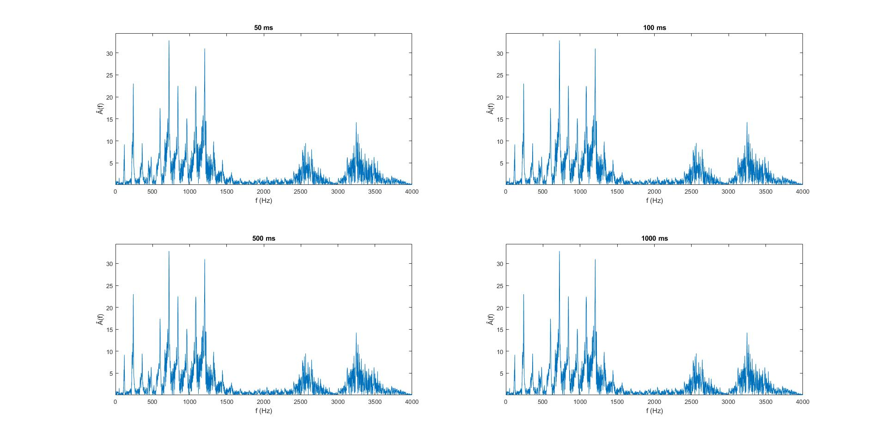
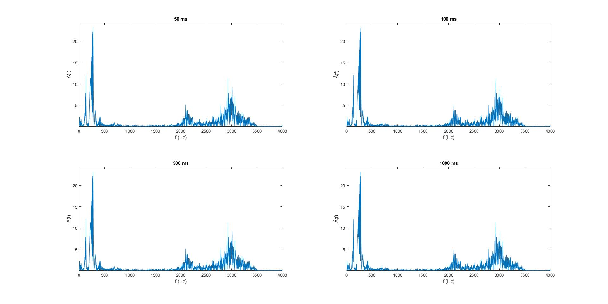
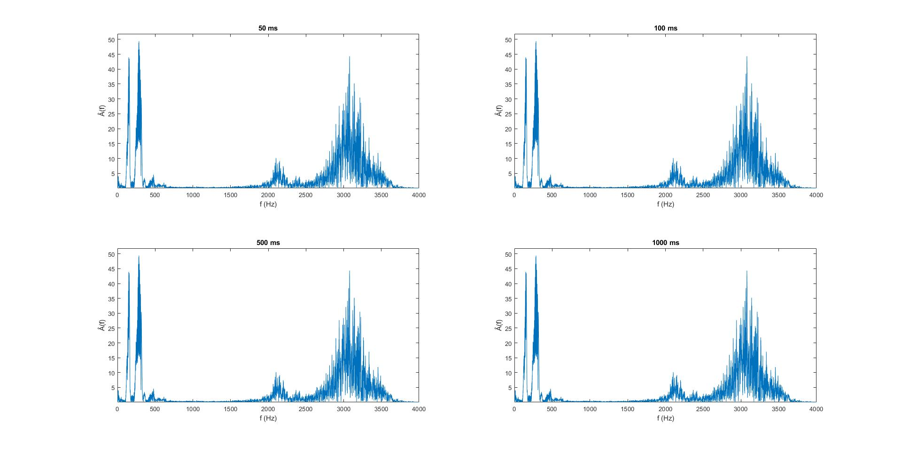

In dieser Übung geht es um die Fouriersynthese und -analyse. Erzeuge mit Matlab/Octave ein Sinusgemisch mit den folgenden Eigenschaften (f: Frequenz, A: Amplitude, phi Phasenwinkel):
f1=500Hz A1=1 phi1=0
f2=1000Hz A2=0,5 phi2=-pi/2
f3=2000Hz A3=0,25 phi3=pi
und einer Dauer von 5 s. Zeichne das Sinusgemisch mit plot im Bereich t=0-20ms. Dabei soll auf der x-Achse die Zeit in ms abgetragen sein. Gibt die Schwingung als Wave-Datei mit wavwrite aus, und zwar mit einer Abtastfrequenz fa von 16kHz
und einer Auflösung von 16bit. Dabei skalieren, um Clipping zu vermeiden.
Verwendeter Code am ende der Seite.
Aufgabe1.2-1.3
Berechne die Fouriertransformation der Sinusschwingung mit der Funktion fft und stelle das ermittelte Amplitudenspektrum mit plot dar. Auf der x-Achse soll dabei die Frequenz in Hertz abgetragen werden dar und zwar zunächst für den Bereich
zwischen 0 und Abtastfrequenz fa. Was fällt beim Betrachten des Spektrums auf?
Variiere dabei die Framelänge zwischen 50ms, 100ms, 500ms, 1 s und 5 s. Welche Frequenzauflösung delta f erhältst du für die verschiedenen Framelängen? Zoome nun in den Bereich 0 bis 4 kHz hinein. Was fällt beim Spektrum bei der Variation der Framelänge
auf? Wie kann man sich diesen Unterschied erklären?
Bild 2
Bild 3
Was fällt beim Betrachten des Spektrums auf?
Wir sehen die Spieglung des Spektrums welche auf Grund der Abtastung des Signals auftritt.
Was fällt beim Spektrum bei der Variation der Framelänge auf?
Je kleiner die Framelänge(Analysefenster) gewählt wird, desto ungenauer wird die Ermittlung der Frequenz. Wir sehen in Bild 3, wie die Frequenz ungenauer ist, bei einer niedrigeren Framelänge.
Wie kann man sich diesen Unterschied erklären?
Durch die geringere Framelänge fallen die Ein- und Ausschalt Störsignale mehr ins Gewicht, weshalb bei einer kleineren Framelänge die ermittelte Frequenz ungenauer ist.
Aufgabe1.4
Nimm nun in Praat den Vokal ‚a‘ und den Vokal ‚i‘ mit 16kHz mono auf, und zwar für jedes Gruppenmitglied. Achte darauf, dass am Anfang der Datei und am Ende keine Pausen bleiben, d.h, die Datei soll gleich mit dem Sprachsignal beginnen.
Lies die Datei mit wavread in deinem Matlab-Programm ein. Berechne auch von diesem Signal die Fouriertransformation, diesmal mit Framebreiten von 50ms, 100ms, 500ms, 1 s. Wie unterscheiden sich die Vokale in ihrem Spektrum vom Sinusgemisch
und wie unterscheiden sie sich voneinander?
Aufnahme David Eichhorn A
Aufnahme David Eichhorn I
Aufnahme Marc Ubbelohde A
Aufnahme Marc Ubbelohde I


Aufnahme Stefan Jessel A
Aufnahme Stefan Jessel I

Wie unterscheiden sich die Vokale in ihrem Spektrum vom Sinusgemisch und wie unterscheiden sie sich voneinander?
Die Spektren der Vokale unterscheiden sich vom Sinusgemisch dadurch, dass die Vokale wesentlich mehr Frequenzen enthalten. A und I haben unterschiedliche Frequenzen die start ausgeprägt sind. A hat die meiste Energie zwischen ~500-1000Hz,
I hat die meiste Energie zwischen 200-400Hz gefolgt von einem Ausschlag bei 2000Hz und 3000Hz. Generelle Unterschiede der Aufnahmen kommen vermutlich von der Verwendung unterschiedlicher Mikrofone und Aufnahmeumgebunen sowie unterschiedlicher
Stimmen. In der Aufnahme von David wurde das A sehr kurz ausgesprochen und hat kaum einen Ausschlag bei 2500Hz und 3300Hz. Marc hat das A mehr gestreckt und wir sehen einen Ausschlag bei 2500Hz und bei 3300Hz. Stefan hat das A weniger
gesteckt und der Ausschlag bei 2500Hz und 3300Hz ist weniger ausgeprägt.
Stefan das I sehr gestreckt und wir haben wieder im Selben Frequenzbereich Ausschläge David hat das I wieder weniger lang ausgesprochen und einen geringeren Ausschlag im Frequenzbereich.
Unsere These ist, dass wenn man einen Vokal beim aussprechen streckt indem man in ein "H" übergeht, weshalb wir bei den gestreckten Vokalen Ausschläge von 2500Hz und 3300Hz sieht.
Wir haben versucht den "H" Lauf aufzunehmen und zu analysieren ob das der Fall ist. Wir konnten diese These aber nicht bestätigen.
Aufnahme David Eichhorn H
Es folgen unsere m Files die wir für diese Aufgabe verwendet haben.
FFTAnalize.m
function FFTAnalize(signalVec, FS,framelengths)
% Diese Funktion erhält einen Signalvector und wendet an ihm die FFT an mit
% gegebenen Framelängen und stellt diese dar
countOfN = length(framelengths);
halfCountOfN = ceil(countOfN/2);
for index = 1:countOfN
N = framelengths(index);
[spec f] = calculateFFT(signalVec, FS, N);
subplot(halfCountOfN,2,index)
plot(f, abs(spec));
title(int2str(N/FS*1000) + " ms");
ylabel("Â(f)");
xlabel("f (Hz)");
end
end
calculateFFT.m
function [arrayFFTResults arrayFFTFrequenceVec] = calculateFFT(signalVec, FS, N)
% calculateFFT(signalVec, FS, N)
% Bestimmt die FFT und gibt das Ergebnis und die Frequenzachse zurück
% Diese Funktion bestimmt die FFT mit dem gegebenen Wert N
% Berechnet zusätzlich die Frequenzachse und gibt diese als zweiten
% Parameter zurück.
arrayFFTResults = fft(signalVec, N);
delta_f = FS / N;
arrayFFTFrequenceVec = [0: delta_f : FS-delta_f];
end
aufgabe1.m
clc;
clear;
close all;
% Parameter für erste Sinusschwingung
f1 = 500; % Frequenz in Herz
A1 = 1; % Amplitude
phi1 = 0; % Phasenverschiebung
% Parameter für zweite Sinusschwingung
f2 = 1000;
A2 = 0.5;
phi2 = -pi/2;
% Parameter für dritte Sinusschwingung
f3 = 2000;
A3 = 0.25;
phi3 = pi;
f_a = 16000; % Abtastfrequenz in Hz
afl = 16; % Auflösung 16 Bit
Ta = 1/f_a;
t = 0:Ta:5-Ta; % Dauer 5 Sekunden
tanz = 0:Ta:0.020 - Ta; % Anzeige x-Achse
A_t1 = A1 * sin(2 * pi * f1 * t + phi1);
A_t2 = A2 * sin(2 * pi * f2 * t + phi2);
A_t3 = A3 * sin(2 * pi * f3 * t + phi3);
A_ges = A_t1 + A_t2 + A_t3; % Dieses Array enthält jetzt Werte größer -1 bis 1
% Suche maximalwert
maxWert = max(abs(A_ges));
% Teile den Vektor durch den Maximalwert
A_ges = A_ges / maxWert;
figure('Name',"Sinusschwingungen")
subplot(2,1,1)
plot(t, A_t1, t, A_t2, t,A_t3);
axis([0 0.02 -2 2]);
title("Sinusschwingungen");
ylabel("A");
xlabel("t");
subplot(2,1,2)
plot(t, A_ges);
axis([0 0.02 -2 2]);
title("Addierte Sinusschwingungen");
ylabel("A");
xlabel("t");
% Fouriertransformation
N_1 = f_a * 0.05;
N_2 = f_a * 0.100;
N_3 = f_a * 0.500;
N_4 = f_a * 1;
N_5 = f_a * 5;
Nvec = [N_1 N_2 N_3 N_4 N_5];
figure('Name',"Fouriertransformierte")
FFTAnalize(A_ges, f_a, Nvec)
audiowrite("aufgabe1_output.wav", A_ges, f_a, "BitsPerSample",afl);
%Stefan----------------------------------------------------------------------
[avec aFS] = audioread("../../wav/Stefan_A.wav");
[ivec iFS] = audioread("../../wav/Stefan_I.wav");
% Stelle Sprachsignale dar
figure("Name","Sprachsignale");
subplot(2,1,1);
plot(avec);
title("A-Sprachsignal");
subplot(2,1,2);
plot(ivec);
title("I-Sprachsignal");
% Berechne und gebe Transformierte Signale aus
figure('Name',"Sprache-Fouriertransformiert A")
FFTAnalize(avec, aFS, Nvec(1:4));
figure('Name',"Sprache-Fouriertransformiert I")
FFTAnalize(ivec, iFS, Nvec(1:4));
%Marc----------------------------------------------------------------------
[avec aFS] = audioread("../../wav/Marc_A.wav");
[ivec iFS] = audioread("../../wav/Marc_I.wav");
% Stelle Sprachsignale dar
figure("Name","Sprachsignale");
subplot(2,1,1);
plot(avec);
title("A-Sprachsignal");
subplot(2,1,2);
plot(ivec);
title("I-Sprachsignal");
% Berechne und gebe Transformierte Signale aus
figure('Name',"Sprache-Fouriertransformiert A")
FFTAnalize(avec, aFS, Nvec(1:4));
figure('Name',"Sprache-Fouriertransformiert I")
FFTAnalize(ivec, iFS, Nvec(1:4));
%David----------------------------------------------------------------------
[avec aFS] = audioread("../../wav/David_A.wav");
[ivec iFS] = audioread("../../wav/David_I.wav");
[hvec hFS] = audioread("../../wav/David_H.wav");
% Stelle Sprachsignale dar
figure("Name","Sprachsignale");
subplot(2,1,1);
plot(avec);
title("A-Sprachsignal");
subplot(2,1,2);
plot(ivec);
title("I-Sprachsignal");
% Berechne und gebe Transformierte Signale aus
figure('Name',"Sprache-Fouriertransformiert A")
FFTAnalize(avec, aFS, Nvec(1:4));
figure('Name',"Sprache-Fouriertransformiert I")
FFTAnalize(ivec, iFS, Nvec(1:4));
figure('Name',"Sprache-Fouriertransformiert H")
FFTAnalize(hvec, hFS, Nvec(1:4));